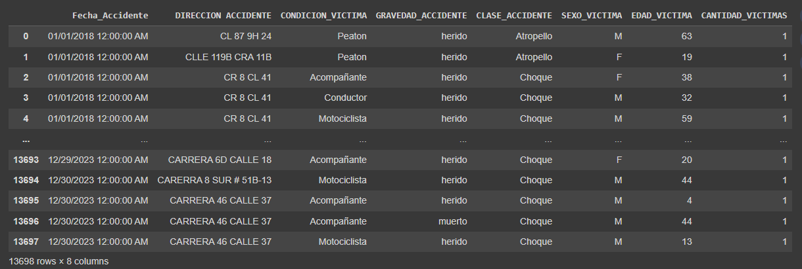
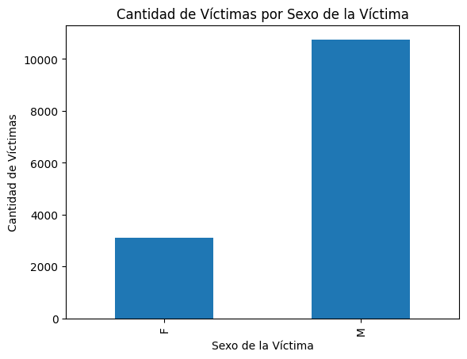
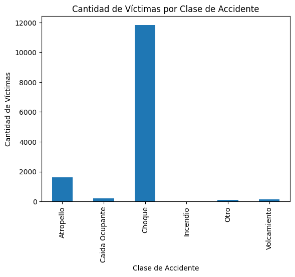
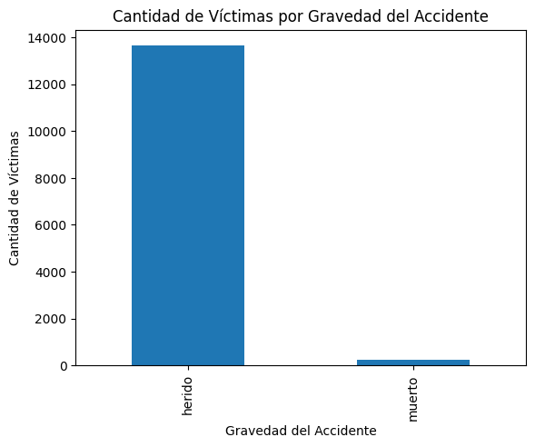
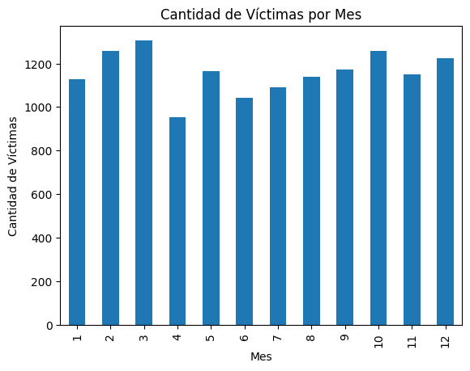

Nuestro Dataset Seleccionado
Victimas de casos de accidentalidad en Barranquilla (Recopilado de DatosAbiertos)

Explicación de la selección del Dataset y visualización inicial de los datos en gráficas
The dataset "Accidentalidad en Barranquilla - víctimas" (Accidents in Barranquilla - victims) from datos.gov.co is crucial for addressing public safety concerns, transportation planning, policy formulation, research endeavors, community awareness, and resource allocation. By providing comprehensive information about accident victims in Barranquilla, Colombia, this dataset serves as a vital tool for understanding the frequency, nature, and locations of accidents, thereby enabling targeted interventions to reduce accidents and associated harm.
Analysis of the data facilitates insights into transportation patterns, infrastructure deficiencies, and factors contributing to accidents, informing the development and evaluation of effective policies aimed at enhancing road safety. Moreover, making this data publicly available raises community awareness about the importance of road safety and encourages safer behaviors while traveling.
It's important to mention that with this project, we could also identify and pinpoint high-risk areas, efficiently allocate resources for their prevention, and plan prevention strategies accordingly. The statistical insights derived from the dataset analysis reveal notable patterns regarding accident victimization in Barranquilla. Fluctuations in the quantity of victims over time suggest potential seasonal variations in accident rates, while the distribution of victims across different severity levels and types of accidents underscores the need for targeted interventions and safety measures. Disparities in victim distribution by gender highlight demographic considerations for safety initiatives, while identifying age groups most affected by accidents offers valuable guidance for tailored educational programs and preventive measures. Overall, these insights provide crucial information for policymakers and community stakeholders to formulate effective strategies aimed at improving road safety and reducing the number of accident victims in Barranquilla.



